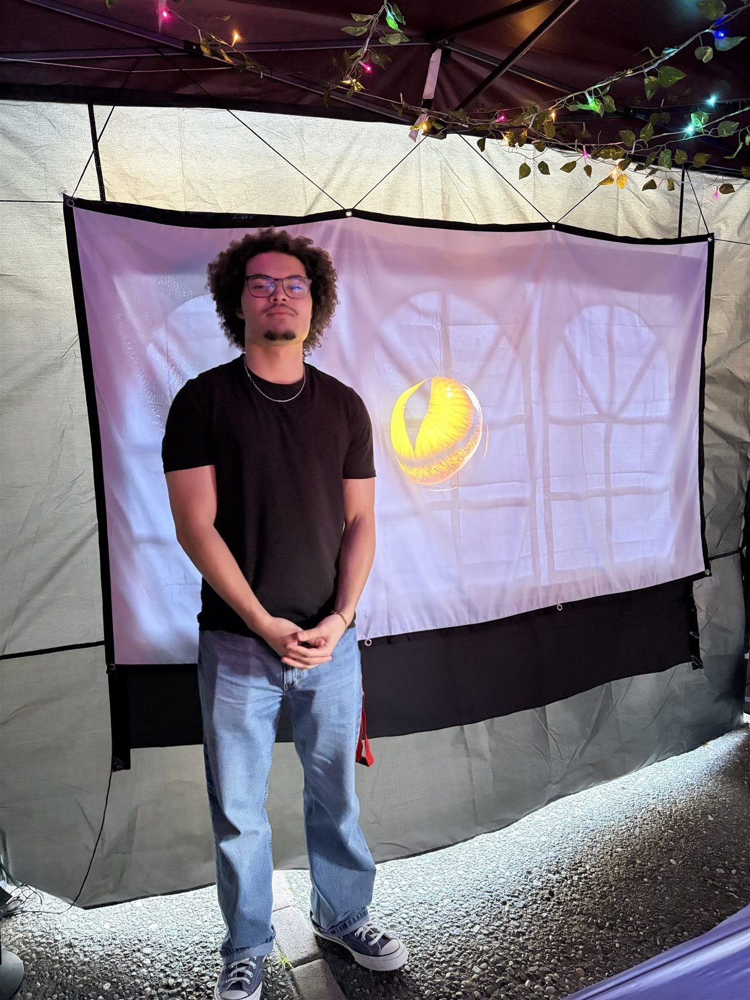
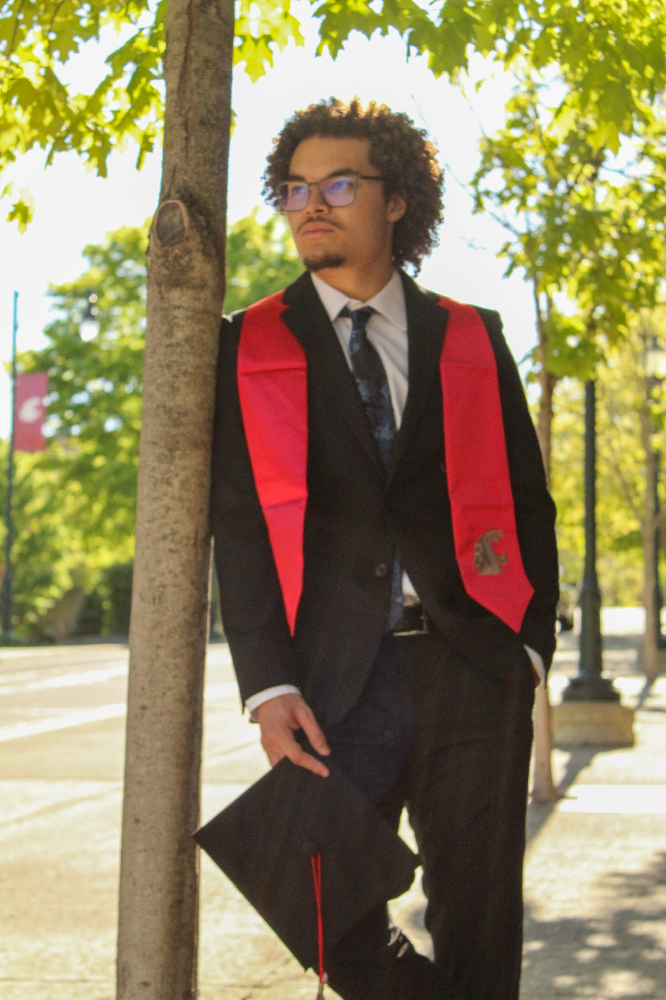
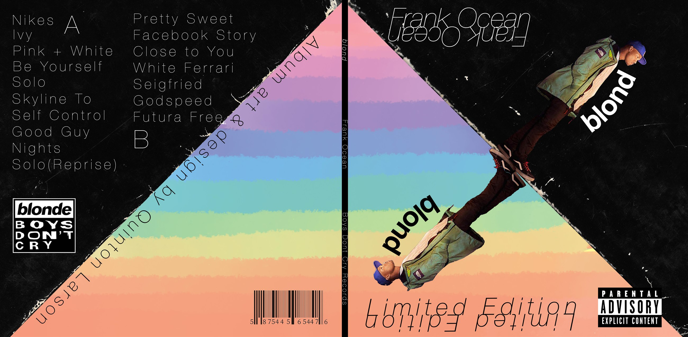
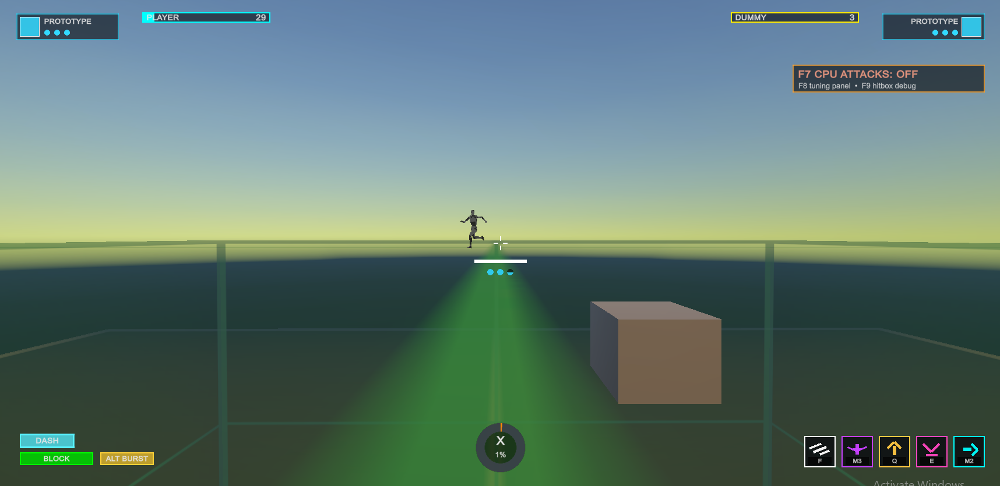

Blooms & Tunes Exhibition
An art installation in downtown Pullman created by me and my senior seminar group. I helped build and lead the projection on the interactive side, then got to watch the work exist outside the classroom.

About Me
I care about stories, emotion, and the profound ways media sticks with us. Art can change how someone sees the world, even if it is only for a moment. That is what pulls me toward games, animation, interactive work, and design.
Selected Work
Class projects, experiments, and works in progress. Some polished, some still cooking.
TouchDesigner

An art installation in downtown Pullman created by me and my senior seminar group. I helped build and lead the projection on the interactive side, then got to watch the work exist outside the classroom.
Uses a Kinect camera to track people in the room. The eye looks at you and follows as you move.
Uses Kinect hand tracking to displace particles when your hand moves in front of the camera.
Uses Kinect depth data to create a hologram-like effect from the camera feed.
3D Work
A 3D animation class project and my favorite piece so far: a hand reaching out of dark water under one hard spotlight.
A classic Blender exercise that helped me practice modeling, lighting, camera movement, and finishing a small scene.
A small physics test focused on weight, timing, and motion.
Design

A Blonde album redesign focused on type, layout, mood, and restraint.

A campaign project about the lower Snake River dams, salmon, and the communities affected by the river's disruption.
Game Development

A work-in-progress fighter prototype focused on movement, attacks, hitboxes, UI, and testing combat feel.
Capabilities
Contact